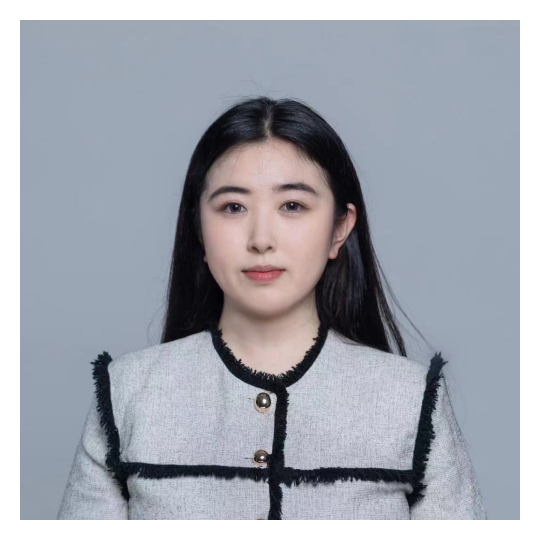

PRINCIPAL INVESTIGATOR
-
Department of Material Science and Engineering, School of Engineering
Department of Chemistry, School of Science
Research Center for Industries of the Future
Hailin Fu, Ph.D.
“I look forward to working with the most active and foreseeing minds and conducting highly unique and inspiring works in the Westlake University.”
Dr. Fu received her Bachelor's degree from the Department of Chemistry and Chemical Engineering in Nanjing University, China in 2012. She then joined Prof. Yao Lin’s group to study cooperative behaviors in polymerizations and foldings of complex macromolecules in University of Connecticut, USA. She obtained her Ph.D degree in polymer chemistry in 2018. She continued with her postdoc trainings in Prof. Ting Xu’s group on random heterogeneous polymers in University of California Berkeley, USA (2019 – 2020) and Prof. E. W. Meijer’s group on supramolecular polymers in Eindhoven University of Technology, Netherlands (2021 – 2024). Dr. Fu’s research is published in Nature, Nat. Chem., Proc. Natl. Acad. Sci. U.S.A., J. Am. Chem. Soc., Nat. Commun., Macromolecules, Biomacromolecules, and other journals.
EMAIL: fuhailin@westlake.edu.cn
OTHER MEMBERS
-
Feixia Ruan
Ph.D. Student
Feixia Ruan, she obtained a bachelor's degree in Materials Science and Engineering from Zhejiang University of Technology, and a master's degree in Biomedical Engineering from South China University of Technology. She is currently pursuing a PhD in Materials Science and Engineering at Xihu University. Her main research direction includes supramolecular synthesis and phase separation behavior.In her leisure time, she enjoys visiting art exhibitions and attend musicals.
EMAIL: ruanfeixia@westlake.edu.cn
-

Zixuan Zhuang
Administrative Assistant
Zixuan Zhuang is a dedicated Administrative Assistant with a robust educational background. She obtained a Bachelor of Science degree from Shandong Normal University in China, laying a solid foundation in administrative studies. Driven by a pursuit of academic excellence, Zixuan furthered his/her education by earning a Master of Science degree from the prestigious University of Manchester in the United Kingdom. This cross-cultural educational journey not only provided Zixuan with valuable international perspectives but also significantly enhanced his/her professional capabilities in the field of administrative management.
EMAIL: zhuangzixuan@westlake.edu.cn